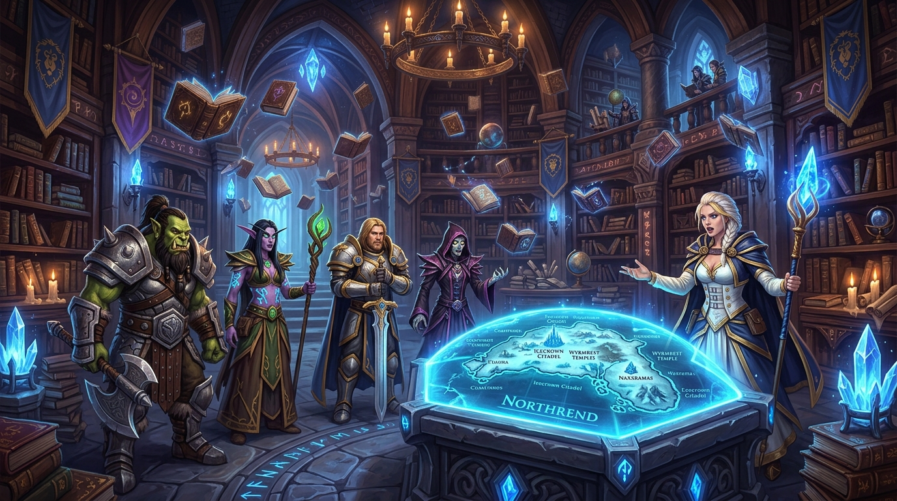

El primer servidor de World of Warcraft del mundo con HeroBots Vivientes impulsados por Inteligencia Artificial Neuronal. Camina junto a Lady Jaina Valiente en Theramore y Dalaran, forja afinidad real a través de diálogos libres, combate hombro a hombro en mazmorras y vive una experiencia binaural 3D sin precedentes.
El portal de Project JAIna abrirá sus puertas a aventureros de todo el mundo. Prepara tu hermandad y únete a la revolución de Lore Viviente con IA Neuronal y Audio Espacial 3D.
Evolución canónica de contenido, bandas y temporadas gobernadas por el Motor de Lore Viviente de Gravity AI
Inteligencia artificial generativa integrada en el núcleo del juego, sin latencia y con memoria persistente

Lady Jaina procesa lenguaje natural en tiempo real mediante un modelo neuronal local (Qwen 2.5 3B / Llama). Recuerda tus hazañas pasadas, evalúa tu afinidad y reacciona a tus palabras con coherencia canónica absoluta.
Invoca a la Archimaga con .playerbots add Jaina. Equipada con Archus, Gran Báculo de Antonidas y un grimorio de 499 hechizos, asistirá tus raids adaptando dinámicamente sus rotaciones de Escarcha y Arcano.
Escucha la voz de Jaina y de otros aventureros con cálculo binaural 3D en tiempo real según su distancia y ángulo cardinal en el mundo de juego. Inmersión sonora total sin necesidad de Discord.
Desafíos Hardcore, Ironman y sistema de progresión de temporada integrado con 18 AddOns oficiales remasterizados exclusivos para la experiencia Project Jaina.
«Hijo mío... el día que naciste, los mismos bosques de Lordaeron susurraron tu nombre...»
Optimizados exclusivamente para el cliente WotLK 3.3.5a HD de Project JAIna, incluidos en el Launcher oficial
Reemplazo total de barras de acción, marcos de unidad micro-botones y minimapa al estándar moderno de Dragonflight en 3.3.5a.
Motor espacial HRTF por proximidad. Escucha a Jaina y a los aventureros con paneo y atenuación cardinal en tiempo real.
Texturas remasterizadas en alta definición, sombras dinámicas y shaders ambientales adaptados a pantallas 4K y Full HD.
Pase de Batalla con 100 niveles de recompensas cosméticas, misiones diarias y desafíos semanales sincronizados con el servidor.
Modo Muerte Permanente oficial. Certificación de supervivencia, lápida in-game y alertas globales para hazañas heroicas.
Sincronización in-game con la era activa gobernada por Gravity AI, bloqueando contenido superior hasta su apertura oficial.
Configuración rápida en 3 sencillos pasos para sumergirte en Azeroth
El reino opera con túneles dedicados de baja latencia con protección perimetral. ¡Juega desde cualquier país sin instalar VPNs!
Ve a nuestra sección de Crear Cuenta. Tu usuario y contraseña se cifran con SRP6 militar y se activan al instante en la base de datos de juego.
En tu cliente de WoW 3.3.5a abre realmlist.wtf y escribe nuestra dirección oficial, o descarga nuestro lanzador:
set realmlist fried-promo.tun.ply.gg:25565